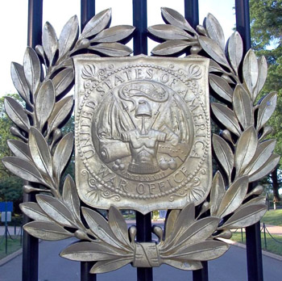

Update on Return of Team Striker

Recon Team Striker
Alpha Company 3rd Reconnaissance Battalion
United States Marine Corps
Lost Date 30 June 1967
Update 22 October 2018


The Final Members of “Team Striker’ have returned home.
27 September 2018
Interred 27 September 2018
| LCpl. | Killen, III | John | D. | Des Moines | IA | 22E | 88 |
| Cpl. | Runnels Jr. | Glyn | L. | Birmingham | AL | 22E | 88 |
| Capt. | House | John | A. | Pelham | NY | 22E | 87 |
Recon Team Striker
| 30 Jun 1967 | Cpl. | Allen | Merlin | R. | Bayfield | WI | 22E | 86 |
| 30 Jun 1967 | HM. | Judd | Michael | B. | Cleveland | OH | 22E | 88 |
| 30 Jun 1967 | LCpl. | Killen, III | John | D. | Des Moines | IA | 22E | 88 |
| 30 Jun 1967 | Cpl. | Runnels Jr. | Glyn | L. | Birmingham | AL | 22E | 88 |
| 30 Jun 1967 | Capt. | House | John | A. | Pelham | NY | 22E | 87 |
| 02 Jul 1967 | LCpl. | Perry | Dennis | M. | Perry | GA | 22E | 112 |
| 12 Aug 1967 | Sgt. | Castaneda | Eugene | Honokaa | HI | 24E | 102 |
Team Members Allen, Judd, Killen, Runnels were all Missing in Action until located and returned home previously by the Department of Defense.
Historical Record of the patrol mission: https://alphareconassociation.org/striker.htm
Department of Defense Press Release
The Defense POW/MIA Accounting Agency (DPAA) announced that the remains of three U.S. servicemen, accounted for from the Vietnam War, are being returned to their families for burial with full military honors.
They are Capt. John A. House, II, 28, of Pelham, New York; Lance Cpl. John D. Killen, III, 18, of Davenport, Iowa; and Cpl. Glyn L. Runnels, Jr., 21, of Birmingham, Alabama, all U.S. Marine Corps. These men, accounted for on Dec. 22, 2015, will be buried as a group Sept. 27, 2018 in Arlington National Cemetery, near Washington, D.C.
Partial remains of two other servicemen who were lost in this incident and were individually identified in 2013, are also represented in this group. They are Marine Lance Cpl. Merlin R. Allen, 20, of Madison, Wisconsin, and Navy Hospital Corpsman Michael B. Judd, 21, of Cleveland, Ohio.
On June 30, 1967, House was the pilot of a CH-46A Sea Knight helicopter, who with three other crew members, was attempting to insert eight members of Company A, 3rd Reconnaissance Battalion, 3rd Marine Division, into hostile territory in Thua Thien-Hue Province, Vietnam. As the helicopter approached the landing zone, it was struck by enemy fire from the surrounding tree line, causing the aircraft to catch fire and crash. Although three crew members and four of the reconnaissance patrol passengers survived and were later rescued, House, Killen, Runnels, Allen, and Judd died in the crash.
In 1993, a joint U.S./Socialist Republic of Vietnam (S.R.V.) team investigated the case in Thua Thein-Hue Province. The team interviewed local villagers who claimed to have discovered an aircraft crash site in 1991 in the nearby forest while searching for wood. The team surveyed the location, finding helicopter-related wreckage with no distinguishing markings.
In 2012, joint U.S./S.R.V. recovery teams excavated the crash site and recovered human remains, material evidence, life support equipment, and aircraft wreckage from the CH-46A helicopter. Additional recovery efforts in 2013 and 2014 failed to yield any additional human remains. Vietnam’s support to the U.S. accounting mission was vital to the recovery of these individuals.
DPAA and the Armed Forces Medical Examiner System used mitochondrial DNA (mtDNA) analysis, dental analysis, anthropological analysis, as well as circumstantial and material evidence to identify House, Killen and Runnels individually.
DPAA is grateful to the government and people of Vietnam for their partnership in this mission.
Today, there are 1,594 American servicemen and civilians still unaccounted for from the Vietnam War. House’s, Killen’s and Runnels’ names are recorded on the National Vietnam Veterans Memorial in Washington, DC, and the Courts of the Missing at the National Memorial Cemetery of the Pacific in Honolulu, along with others who are unaccounted-for from the Vietnam War. A rosette will be placed next to their names to indicate they have been accounted for.
For additional information on the Defense Department’s mission to account for Americans who went missing while serving our country, visit the DPAA website at www.dpaa.mil, find us on social media at www.facebook.com/dodpaa or call (703) 699-1420/1169.
House’s personnel profile can be viewed at https://dpaa.secure.force.com/dpaaProfile?id=a0Jt000000oW625EAC
Killen’s personnel profile can be viewed at
https://dpaa.secure.force.com/dpaaProfile?id=a0Jt000000oW62FEAS
Runnels’ personnel profile can be viewed at
https://dpaa.secure.force.com/dpaaProfile?id=a0Jt000000oW62jEAC